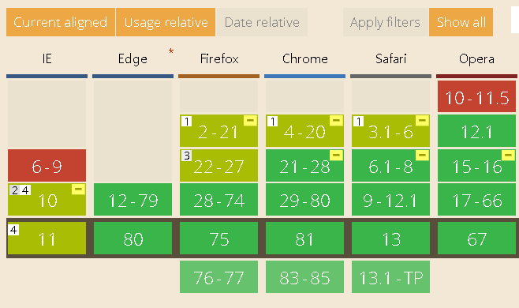

레이아웃 구성시 보통 position / float / flex 이 세가지 속성을 통해 원하는 위치에 구성할 수 있다.
그 중에서 오늘은 display:flex 에 대해서 다뤄보도록 하자.
flex는 container 과 items 2개의 개념으로 나뉜다.
아래의 그림처럼 우리가 사용하는 대부분의 브라우저에서 지원을 하지만 ie 에서는 10이하는 지원을 하지 않으며, 또한 ie 10에서 지원하기 위해서는 -ms- 제조사 접두어를 붙여야 한다.

아래 박스들을 보면, ul li 형태의 리스트로 마크업을 하였는데, li의 부모영역인 ul에 display:flex를 적용함으로써 손쉽게 가로정렬을 만들 수가 있다.
부모요소(container)에는 display, flex-flow, justify-content를 사용할 수 있다.
정렬 할 요소(items)에는 order, flex, align-self 등의 속성을 사용할 수 있습니다.
order 같은 경우는 같은 선상에 있는 items의 원하는 순서대로 정렬할 때 용이하다.